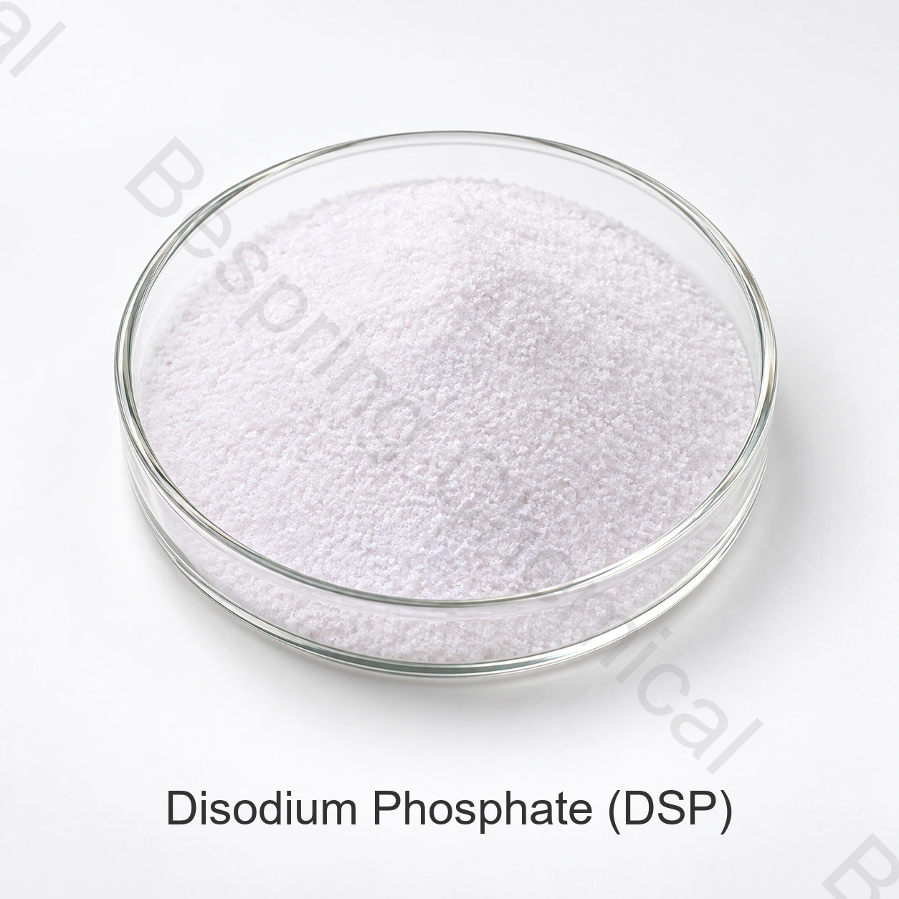

Régulation de la pression et de l'acidité
DSP peut aider à établir ou à maintenir le pH dans des systèmes compatibles de fromage, de boisson, de gelée, de laiterie et d'ingrédients.
Phosphate alimentaire · Orthophosphate de sodium · INS 339(ii)
Identifiez la forme anhydre ou hydratée avant de comparer les spécifications du DSP. Évaluez le pH et la stabilité dans la formulation réelle de lait ou de boisson végétale.
Voir également l’évaluation des phosphates pour les boissons lactées et végétales.

Illustration du produit · grade et conditionnement précisés dans votre offre
Aperçu du produit
Essai de référence≥98.0%
Emballage standard À confirmer dans le devis
Chargement des conteneurs À confirmer dans le devis
CompétenceCOA et certificats sur demande
Le phosphate disodique (DSP) de qualité alimentaire, officiellement disodique, est INS 339(ii). Le CAS 7558-79-4 correspond au Na anhydre2HPO4; les formes hydratées nécessitent une formule séparée et une confirmation d'identité.
Les limites de référence commerciale et les renseignements officiels sur l'identité sont fournis ci-dessous. L'utilisation légale, la posologie et la documentation doivent être confirmées pour le marché de destination et l'application exacte des aliments.
Rôles fonctionnels
La performance dépend de la qualité, de la posologie, de la formulation, des conditions du procédé et des règles alimentaires applicables.
DSP peut aider à établir ou à maintenir le pH dans des systèmes compatibles de fromage, de boisson, de gelée, de laiterie et d'ingrédients.
L'information fournie identifie la rétention d'eau, évalue les interactions protéiques, la texture et la stabilité de la formulation réelle.
Dépistage des demandes d'aliments
Il s'agit de zones d'examen des applications, et non d'approbations d'utilisation universelles ou de résultats garantis.
Peut être utilisé dans des systèmes d'émulsion-sel qualifiés pour soutenir le pH, l'équilibre minéral, la fusion et la texture.
Évaluer le tamponnage, la clarté, le goût et la compatibilité avec le calcium, les protéines et les acides.
Régulation de l'acidité de l'écran, interaction gel et stabilité de stockage dans la recette complète.
Peut soutenir le tamponnage et la gestion de l'eau après des essais de compatibilité avec le système laitier et stabilisateur.
Évaluer la rétention, la liaison et le rendement de l'eau dans le cadre du processus de sel, de protéines et de chaleur.
L'information fournie fait état de l'utilisation de cultures; elle confirme la qualité, le rôle des nutriments et les exigences en matière de procédés.
Caractéristiques commerciales
Les limites de référence commerciales suivantes sont distinctes des résultats de le COA par lots. Conviennent de la forme d'hydratation, de la base d'analyse et des méthodes d'essai dans les spécifications de votre commande.
Balayez l’écran ou utilisez le clavier pour consulter toutes les colonnes
| Élément d ' essai | Unité | Spécification |
|---|---|---|
| Teneur en phosphate disodique, sous forme de Na anhydre2HPO4 | % | ≥98.0 |
| Arsenic (A) | % | ≤0.0003 |
| Fluorure (F) | % | ≤0.003 |
| Métaux lourds (en Pb) | % | ≤0.001 |
| Matières insolubles dans l'eau | % | ≤0.2 |
| Plomb (Pb) | % | ≤0.0004 |
| Perte lors du séchage, Na2HPO4 | % | ≤5.0 |
| Perte lors du séchage, Na2HPO4·2H2O | % | 18.0–22.0 |
| Perte lors du séchage, Na2HPO4·12H2O | % | 61.0 |
Note de spécification: Le Na2HPO4 est la formule anhydre et ne doit pas être décrit comme un monohydrate. Le tableau comprend également des entrées distinctes de perte de séchage dihydraté et dodécahydraté. Spécifiez la forme d'hydratation, la formule correspondante et le CAS, et la base de test applicable pour votre commande.
Appui à la qualification
Demander la spécification/le DTS actuel, la FDS, les méthodes d'essai et le COA représentatif ou par lot.
Demander les documents HACCP, Kosher, Halal et ISO applicables; vérifier le produit, le site, la portée et la validité.
Revoir la FAO/OMS JECFA record de phosphate d'hydrogène disodique pour le contexte d'identité.
Stockage et manutention
Questions de l'acheteur
Le phosphate disodique est un orthophosphate de sodium utilisé dans certains systèmes alimentaires pour le tamponnage, la régulation de l'acidité, les fonctions émulsifiant-sel et la gestion de l'eau.
La spécification de référence commerciale indique ≥98.0%. Utilisez la spécification actuelle signée et le COA de lot pour l'acceptation.
Précisez la quantité, le conditionnement, le lieu de livraison et la date souhaitée. Confirmez les quantités minimales et les modalités dans le devis du produit proposé.
Demander les spécifications/DTS, la FDS, le COA et les documents HACCP, Kosher, Halal et ISO applicables pour la source exacte.
Fournir le formulaire de qualité ou d'hydratation, la demande, les spécifications, la quantité, l'emballage, la destination, les documents et la date de livraison.
Phosphates alimentaires apparentés
Examiner l'identité, les spécifications, les applications et les détails d'approvisionnement pour ce phosphate alimentaire connexe.
Examiner l'identité, les spécifications, les applications et les détails d'approvisionnement pour ce phosphate alimentaire connexe.
Examiner l'identité, les spécifications, les applications et les détails d'approvisionnement pour ce phosphate alimentaire connexe.
Guides d'application et de sélection: Sels émulsifiants de fromage transformés et stabilisants laitiers. Utiliser les guides pour les questions de processus; confirmer la qualité exacte fournie séparément.
Approvisionnement fondé sur les spécifications
Partager l'application, les spécifications, la quantité, l'emballage, la destination et les documents requis.
Si le formulaire est indisponible, vous pouvez ouvrir la page de contact ou écrire à l’équipe commerciale.
Dites-nous votre marché de qualité et de destination afin que nous puissions confirmer quels documents sont disponibles pour votre commande.
Une référence externe n'est pas un certificat de lot ou une spécification de produit Bespring.